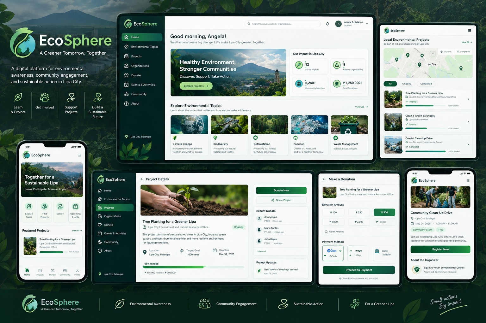

IT Service
Management
Service delivery, support priorities, operational workflows, and a customer-first approach.
Live to Learn and Earn.
I'm Benedict L. Molinyawe, a BS Information Technology student majoring in Service Management. I combine technical training with practical experience in data, administration, and user support.
I am a motivated 3rd-year BS Information Technology student majoring in Service Management at Batangas State University. My academic training has given me a foundation in IT service delivery, system administration, and infrastructure workflows. Through SPES, I gained practical experience managing digital databases, technical logs, records, and user assistance. I value accuracy, clear communication, adaptability, and continuous learning.
Approaching technical work with a customer-focused mindset.
Maintaining accurate records, data, and operational information.
Building practical IT skills through academic and hands-on work.
Skills aligned with IT support, service management, and organized information handling.
Service delivery, support priorities, operational workflows, and a customer-first approach.
Digital database management, data updates, technical logs, and structured information handling.
Clear communication, user assistance, diagnostic thinking, and practical troubleshooting.
Accurate encoding, validation, filing, cataloging, and retrieval of digital and physical records.
Developing academic projects that connect users, information, services, and practical workflows.
Adaptable, detail-oriented, organized, and committed to continuous improvement.
GOVERNMENT YOUTH SERVICE
Barangay Inosluban Office
Entered, updated, and validated community records within administrative databases.
Organized, cataloged, and archived files to improve workflow and retrieval.
Assisted local officials during community outreach and clerical desk inquiries.
WEB PLATFORM
A Web-Based Environmental Awareness and Fundraising Platform for Sustainable Action in Lipa City

Many communities have access to environmental information online but lack an organized and localized platform connecting awareness with actual participation and sustainability projects.
EcoSphere provides structured environmental topics, local project information, active and completed initiatives, and fundraising opportunities to encourage environmental awareness and community participation.
Building a practical web experience that organizes information and helps connect people with local sustainability action in Lipa City.
ACADEMIC BACKGROUND
Major in Service Management · Batangas State University — Lipa City
The Mabini Academy — Lipa City, Batangas
The Mabini Academy — Lipa City, Batangas
CERTIFICATIONS & HONORS
LET'S CONNECT
Interested in IT support, service management, and practical information systems. I'm always open to learning opportunities and meaningful technical work.